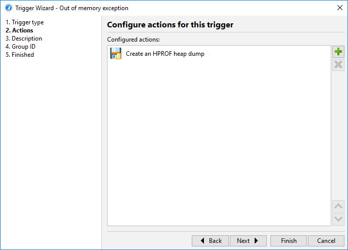
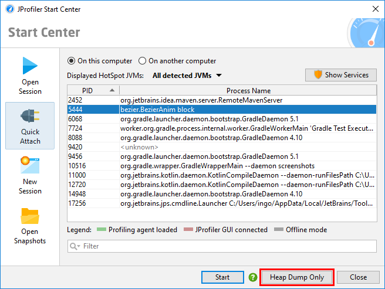
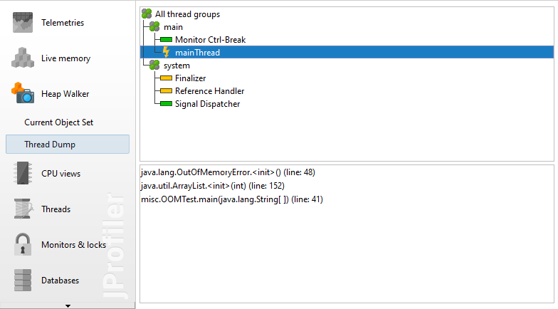

The HotSpot JVM and the Android Runtime both support heap snapshots in the HPROF format, The IBM J9 JVM writes such snapshots in the PHD format. PHD files do not contain garbage collector roots, so JProfiler simulates classes as roots. Finding class loader memory leaks may be difficult with a PHD file.
Native heap snapshots can be saved without the profiling agent and incur a lower overhead than JProfiler heap snapshots, because they are saved without the constraints of a general purpose API. On the flip side, the native heap snapshots support less functionality than JProfiler heap snapshots. For example, allocation recording information is not available, so you cannot see where objects have been allocated. HPROF and PHD snapshots can be opened in JProfiler withSession->Open Snapshot, just like you would open a JProfiler snapshot. Only the heap walker will be available, all other sections will be grayed out.
In a live session, you can create and open an HPROF/PHD heap snapshot by invoking
Profiling->Save HPROF/PHD Heap Snapshot. For
offline profiling, there is a "Create an HPROF heap dump" trigger action.
It is usually used with the "Out of memory exception" trigger to save an HPROF snapshot when an
OutOfMemoryError is thrown.

This corresponds to the VM parameter
-XX:+HeapDumpOnOutOfMemoryError
that is supported by HotSpot JVMs.
An alternative way to extract an HPROF heap dump from a running system is via the command line tool
jmap
that is part of the JRE. Its invocation syntax
jmap -dump:live,format=b,file=<filename> <PID>
is difficult to remember and requires you to use the jps executable to find out
the PID first. JProfiler ships with an interactive command line executable
bin/jpdump
that is much more convenient. It lets you select a process, can connect to processes running as a service on
Windows, has no problems with mixed 32-bit/64-bit JVMs and auto-numbers HPROF snapshot files. Execute it with
the -help option to get more information.
Taking HPROF heap snapshots without loading the profiling agent is also supported in the JProfiler GUI. When attaching to a process, locally or remotely, you always have the possibility to just take an HPROF heap snapshot.

HPROF snapshots can contain thread dumps. When an HPROF snapshot was saved as a consequence of an
OutOfMemoryError, the thread dump may be able to convey what part of the application was
active at the time of the error. The thread that triggered the error is marked with a special icon.
